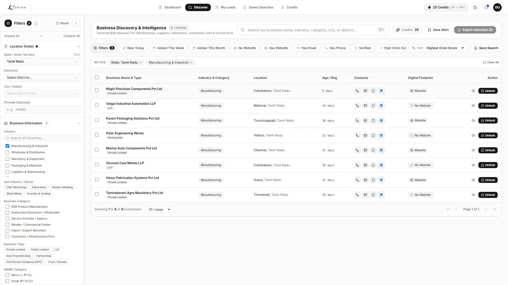
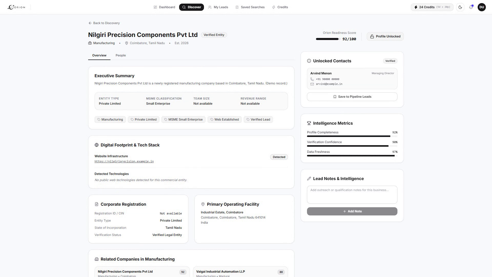
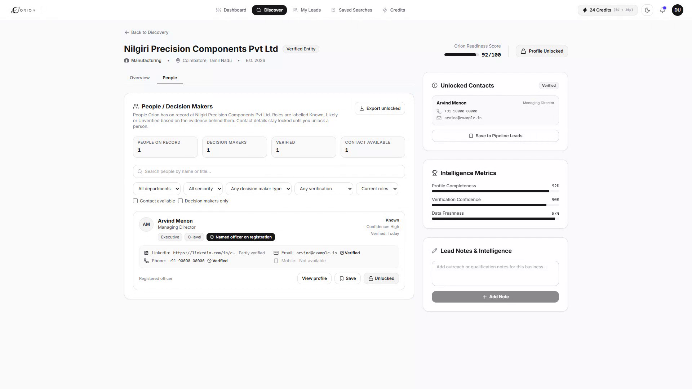

Discover. Enrich. Act.
DISCOVERFilter by industry and location.Fresh businesses appear instantly.
ENRICHCompany signals and decision-maker contacts.Unlock what you need.



ACTSave to pipeline. Export unlocked leads.
Discover. Enrich. Act.
Business intelligence for modern sales teams.
PRODUCT UI SHOWN WITH DEMO DATA